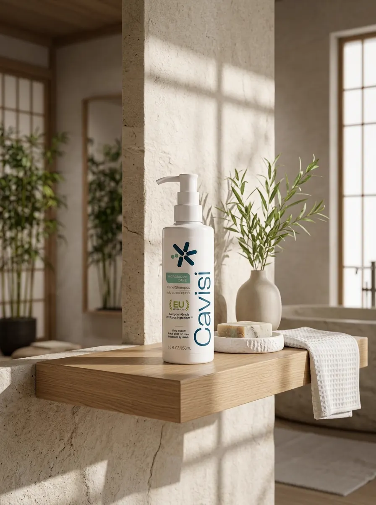

01 / NỀN TẢNG
Scalp-first
Xem da đầu là nền tảng của trải nghiệm mái tóc khỏe; ưu tiên làm sạch đúng cách, chăm sóc cân bằng và duy trì hàng rào bảo vệ.
Về thương hiệu Cavisi
Cavisi bắt đầu từ một câu hỏi quen thuộc: vì sao cảm giác gàu, ngứa và bết dầu có thể quay lại dù đã đổi nhiều loại dầu gội? Từ đó, thương hiệu theo đuổi cách tiếp cận Scalp-First Care, kết hợp bước làm sạch với bước chăm sóc lưu lại.

01 / Vì sao chúng tôi ở đây
Khi gặp gàu, ngứa hoặc bết dầu, nhiều người có xu hướng tập trung vào cảm giác làm sạch mạnh. Cavisi lựa chọn chu trình hai bước để phân định rõ vai trò làm sạch và chăm sóc lưu lại trên da đầu.
Xem da đầu là nền tảng của trải nghiệm mái tóc khỏe; ưu tiên làm sạch đúng cách, chăm sóc cân bằng và duy trì hàng rào bảo vệ.
Hướng đến trạng thái cân bằng bã nhờn, hệ vi sinh và môi trường da đầu; Malassezia được đề cập như một yếu tố có liên quan đến gàu.

Kết hợp các thành phần như Salicylic Acid, Zinc PCA và thành phần lên men vỏ liễu với cảm hứng chăm sóc từ thiên nhiên.
02 / Nguyên tắc vận hành
Ưu tiên giải thích đúng vai trò của thành phần và không đưa ra lời hứa vượt quá phạm vi chăm sóc mỹ phẩm.
Không dùng hình ảnh gây hoang mang, không thổi phồng nỗi sợ hãi hay dùng áp lực mua hàng để thúc ép người tiêu dùng.
Thiết kế chu trình 2 bước phù hợp với thực tế khí hậu nóng ẩm, thói quen đi lại bằng xe máy và đội mũ bảo hiểm hàng ngày tại Việt Nam.
Công khai danh sách INCI và số tiếp nhận do thương hiệu cung cấp; các hồ sơ gốc còn thiếu được ghi rõ trạng thái chờ đối chiếu.
03 / Thông tin sản xuất
Cavisi hiện công bố thông tin cơ sở gia công do thương hiệu cung cấp. Hồ sơ nhà máy và chứng nhận tương ứng chưa có trong bộ tài liệu website để đối chiếu độc lập.
Địa chỉ: Cụm công nghiệp Thanh Oai, Xã Bình Minh, TP. Hà Nội, Việt Nam.
Thông tin về dây chuyền, hệ thống phòng sạch và quy trình kiểm soát chất lượng cần được đối chiếu với hồ sơ chính thức trước khi dùng như bằng chứng xác nhận.
